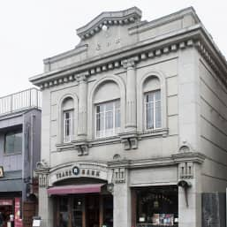

Culture and
History
今でもその姿を残す、江戸時代の風景「蔵造りの街並み」。川越の蔵造りは、火事が多かった当時、類焼を防ぐための耐火建築として発展したもの。1999年に「重要伝統的建造物群保存地区」に選定され、2007年に「美しい日本の歴史的風土100選」にも選出されました。見どころとしては、明治26年の川越大火でも焼け残り、蔵造りを広めるきっかけになった、重要文化財である「大沢家住宅」や、蔵造りの様々な特徴を伝える「蔵造り資料館」などがあます。
Koedo Area
-
時の鐘
約400年前、川越藩主だった酒井忠勝によって創建されたといわれる。以降、度重なる火災で鐘楼や銅鐘が焼失するが、江戸時代を通じて度々建て替えられた。
-
埼玉りそな銀行
大正7年に旧国立八十五銀行本店として建てられ、国の登録有形文化財の指定を受けています。時の鐘と共に川越のランドマーク的な大正建築が魅力。
- 
田中家住宅
大正4年（1915）建築の土蔵造り、川越市指定文化財。現在はノスタルジー溢れる喫茶店「カフェ・エレバート」があり、散策の休憩場所として人気。
-
旧山崎邸別邸
大正時代、和菓子『亀屋』の当主であり実業家である嘉七氏が皇族の方々の滞在先や賓客との会談場所 として建設。特に内部のステンドグラスは必見。
-
川越キリスト教会
英国系のプロテスタント教会。その始まりは明治11年（1878）迄遡りますが、現在の建物は、明治の川越大火で消失後、大正10年（1921）に再建されたもの。
-
川越スカラ座
昭和レトロな1スクリーンの映画館。ここでしか観られないような映画が多く、熱狂的な映画ファンをはじめ、映画監督等からも愛されている。
-
川越商工会議所
昭和3年（1928年）建築。武州銀行川越支として建築された。その後昭和45年（1970年）に川越商工会議所が譲り受け、現在も利用されている。
-
服部民俗資料館
明治26年に建てたれた服部家の建物をそのまま資料館にし、その当時使用されていた薬の看板や帳場、下駄や雪駄などの民具が保存・展示されています。
-
菓子屋横丁
石畳の道に、20軒程度の菓子屋などがひしめく小江戸川越の有名なスポット。醤油の焼ける芳ばしい香り、ニッキやハッカ飴、駄菓子やだんごなど盛りだくさん。
-

川越ベーカリー楽楽
お店の裏にサイクルラックもあるベーカリー。菓子屋横丁の懐かしい雰囲気に溶け込む外観が特徴。もちろんパンも美味しく、人気！
-
HatagoKoedoya
川越の中心市街地に隣接した場所にある宿泊施設。ルームタイプはシングルルームから最大12名のドミトリータイプまであり、観光者に人気。
-

蓮馨寺
室町時代に創建された浄土宗のお寺。江戸時代には徳川家との関係が深く、葵の紋がある。また、川越七福神の一つ福禄寿も祀られている。


Person
文化を守る人、文化をつくる人。
川越は、伝統と新しい文化が融合する街。川越を良く知る川越スカラ座の舟橋さん、飯島さん、川越で革教室を行っている山科さんご夫婦にお話を訊きました！


Interview and movie
Kimono de Piano
コロナ禍でも
みんなが元気になれる
イベントを。
主催・代表／川越着物レンタル柚屋 田村かおりさん
+more
蔵造の街並みが魅力の小江戸、川越。他にも魅力の場所がたくさんあります。
-
川越氷川神社 拝殿
約1500年前に創建されたという歴史ある神社で、出雲大社の縁結びの神様としても知られる大己貴命をはじめ、2組の夫婦を含む5柱の神様が祀られている。
-
川越大師 喜多院
千二百年近くの歴史を持つ喜多院。天長七年（830）、慈覚大師円仁により創建された星野山無量寿寺が始まりとされ、四季折々の行楽客で賑わう。
-
成田山川越別院（本行院）
川越市にある真言宗智山派の寺院。成田山新勝寺の別院で、通称は川越不動。毎月28日には蚤の市で、11月には火渡り祭で賑わう。
-
川越城 本丸御殿
長禄元年(1457年)に、上杉持朝の命により、家臣の太田道真・道灌親子が築いたといわれている。現存する建物は嘉永元年(1848年)に建てられた。
-
ヤオコー川越美術館
建築のノーベル賞と言われる「プリツカー賞」を受賞した世界的建築家である伊東豊雄氏による設計。近代的で洗練されたデザインが魅力。
-
川越市立美術館
川越城二の丸跡にある川越市立博物館の隣接地にあり、川越の蔵造りの商家のデザインを外観に取り入れた美術館。
-
川越博物館
川越の歴史を学べる常設展示が人気。江戸時代の街並みを現わした模型が、城下町として発展した川越の歴史を見学できる。
-
川越熊野神社
「おくまんさま」と呼ばれ親しまれている川越熊野神社は、開運・縁結びの神様として信仰されています。